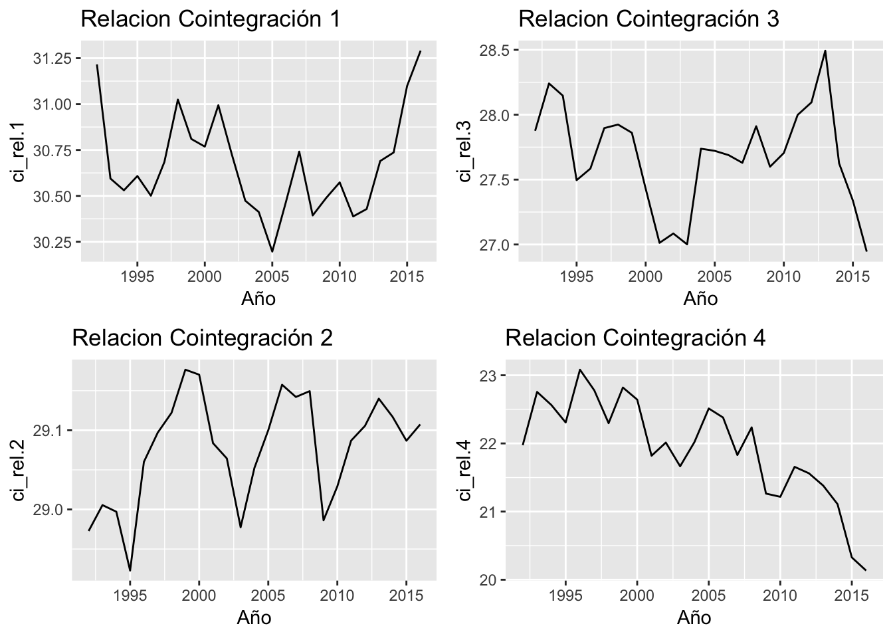
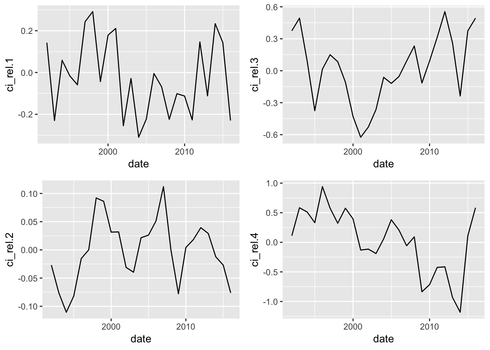

Chapter 11 Cointegración (Análisis)
En esta sección haremos la prueba de cointegración multivaraida para las series no estacionarias mostradas en las secciones previas. Es decir, las series que entrarán al modelo VECM son:
- ln(PIB constante), \(I(1)\)
- Gasto en Educación, \(I(1)\)
- Gasto en salud, \(I(1)\)
- Recaudación Impositiva, \(I(1)\)
Las series utilizadas tienen una profundidad anual histórica desde 1991-2016.
Nos interesa conocer desde un punto de vista totalmente estadístico si existe algún tipo de relación de largo plazo entre la recaudación impositiva y el desarrollo de la nación en términos de indicadores básicos tales como el desempleo, gasto en salud y PIB a precios constantes.
Para ello, necesitamos estructurar la información para ser leída por la función ca.jo.
Definimos las series a utilizar, dado que todas las series son integradas de orden 1 \(I(1)\) no hay necesidad de diferenciar las series, pues buscamos una o más combinaciones lineales de ellas que sean \(I(0)\).
ln_pib_cte <- series_db$log_GDP_constante
edu <- series_db$Gasto_Educacion_PorcGDP
salud <- series_db$Gasto_Salud_PorcGDP
rec_imp <- series_db$Recaudacion_Impositiva_PorcGDPPosteriormente, tomaremos todas las series que ya son integradas de orden 1 \(I(1)\) y eliminaremos el primer registro para que todas las series tengan la misma longitud
#ln_pib_cte <- series_db$log_GDP_constante[-1]
#edu <- series_db$Gasto_Educacion_PorcGDP[-1]
#salud <- series_db$Gasto_Salud_PorcGDP[-1]
#rec_imp <- series_db$Recaudacion_Impositiva_PorcGDP[-1]
model.data <- cbind(ln_pib_cte,edu,salud,rec_imp)Como un modelo preliminar utilizaremos la siguiente especificiación:
\(\nabla y_t=\Gamma_1\nabla y_{t-1} + \cdots + \Gamma_{k-1}\nabla y_{t-k+1}+ \Pi y_{t-1} + \mu +\epsilon_t\)
donde el vector \(y_t\) contiene a los elementos (ln_pib_cte,edu,salud,rec_imp)’ y el vector \(\mu\) es un vector de constantes. El proceso del error de 4 dimensiones \(\epsilon_t\) se asume i.i.d \(N(0,\Sigma)\) para \(t=1,\cdots,T\). Cabe mencionar que estaremos utilizando la especificación que mide los efectos transitorios para el VECM. Es decir, \(\Gamma_i = -(\Pi_{i+1},\cdots,\Pi_k)\) con \(i=1,\cdots, k-1\) y \(\Pi=-(I-\Pi_1-\cdots-\Pi_k)\).
11.1 Determinación del Rango de Cointegración
Debido a que las inferencias sobre el espacio de cointegración generado por las series dependen de si existen o no tendencias lineales en los datos, se puede argumentar mediante un análisis visual y razonamiento lógico que la series como el GDP, desempleo y salud, contienen una tendencia lineal y es completamente lógica, por lo que el vector \(\mu\) puede ser estimado sin imponer ningun tipo de restricción sobre él.
La hipótesis \(H_1(r) : \Pi=\alpha\beta'\) (i.e. \(\Pi\) es de rango reducido) es probada utilizando el estadístico de la traza y del máximo eigenvalor.
M1 <- ca.jo(model.data,spec='transitory', type='eigen',K=2)
#summary(M2)
M1.trace <- summary(ca.jo(model.data,spec='transitory',type='trace',K=2))
cbind(test=M1.trace@teststat,M1.trace@cval)## test 10pct 5pct 1pct
## r <= 3 | 0.2680195 6.50 8.18 11.65
## r <= 2 | 8.4860040 15.66 17.95 23.52
## r <= 1 | 26.7400746 28.71 31.52 37.22
## r = 0 | 61.7048157 45.23 48.28 55.43M1.eigen <- summary(ca.jo(model.data,spec='transitory',type='eigen',K=2))
cbind(test=M1.eigen@teststat,M1.eigen@cval)## test 10pct 5pct 1pct
## r <= 3 | 0.2680195 6.50 8.18 11.65
## r <= 2 | 8.2179845 12.91 14.90 19.19
## r <= 1 | 18.2540706 18.90 21.07 25.75
## r = 0 | 34.9647411 24.78 27.14 32.14En los dos outputs anteriores, los resultados de las dos pruebas son mostrados. Si consideramos por un lado el estadístico del máximo eigenvalor (\(H_0:rank(\Pi)=r\) vs \(H_a:rank(\Pi)=r+1\)), la hipótesis de no cointegración puede ser rechazada a un nivel de 5% de confianza, mientras que la hipótesis de que existen 1 relaciones de cointegración vs 2 no puede ser rechazada, por lo tanto, existen 1 relaciones de cointegración. Por otro lado, el estadístico de la traza (\(H_0: rank(\Pi)\leq r\)) indica un espacio de cointegración de \(r=1\) también. Consideremos también si esta conclsión podría ser errónea debido a la posible cercanía de los eigenvalores:
M1@lambda## [1] 0.76703434 0.53260767 0.28994725 0.01110535Como es posible observar, dos de los cuatro eigen valores están relativamente cerca entre ellos. Para determinar correctamente el orden de integración, Johansen y Juselius investigaron sobe las matrices \(\hat{\beta}\) y \(\hat{\alpha}\) así como las relaciones de cointegración estimadas \(\hat{\beta_i}'y_{t-1}\) y aquellas relaciones corregidas por las influencias de corto plazo \(\hat{\beta_i}'R_{1t}\). Para ello, proponen los siguientes pasos a seguir:
- Estimar el modelo de corrección de error
- Determinar el rango de \(\Pi\)
- utilizar los \(r\) vectores de cointegración más significativos para formar \(\beta'\)
- Seleccionar \(\alpha\) tal que \(\Pi=\alpha\beta'\)
Observemos la matriz de eigen vectores beta
beta.matrix <- M1@V
alpha.matrix <- M1@PI%*%solve(t(beta.matrix))
beta.matrix## ln_pib_cte.l1 edu.l1 salud.l1 rec_imp.l1
## ln_pib_cte.l1 1.0000000 1.00000000 1.0000000 1.0000000
## edu.l1 -0.2734779 -0.12722367 -0.8329062 -0.4709689
## salud.l1 -0.3187240 -0.14485981 1.3555847 -0.7250595
## rec_imp.l1 0.2359534 -0.02050015 -0.2056044 -0.4166424En la matriz \(\beta\) se pueden observar los vectores de cointegración, de tal manera que la primera columna corresponde al vector de cointegración asociado con el eigenvalor más grande. Debe notarse que los vectores de cointegración están todos normalizados a la primera variable, por lo que la matriz de velocidad de ajuste \(\hat{\alpha}\) se ajusta de acuerdo a esta matriz normalizada:
alpha.matrix## ln_pib_cte.l1 edu.l1 salud.l1 rec_imp.l1
## ln_pib_cte.d 0.02575836 -0.1945384 -0.01292212 -0.004630415
## edu.d 0.81182331 1.8215325 0.14885276 0.008440650
## salud.d -0.10602593 0.7318614 -0.18202612 -0.004282401
## rec_imp.d -2.42505459 8.1784032 0.50872868 -0.058362273Al observar la matriz \(\hat{\alpha}\) se puede concluir que las velocidades de ajuste de las relaciones de cointegración parecen ser distintas de cero, esto significa que las relaciones de cointegración juegan un papel importante en la dinámica de corto plazo de cada una de las series, aunque aún falta validar que todas las relaciones de cointegración son estadísticamente significativas en cada serie.
Además podemos analizar la relación de cointegración de manera visual:
ci.1 <- ts((M1@x%*%beta.matrix)[-c(1),],
start = 1992,
end = 2016,
frequency = 1)
ci.rel <- as.data.frame(ci.1) %>%
mutate(date=time(ci.1))
ci.rel <- ci.rel[,c(5,1:4)]
colnames(ci.rel) <- c('Año','ci_rel.1','ci_rel.2','ci_rel.3','ci_rel.4')
ci.rel.df <- as.data.frame(ci.rel)
ci.rel.df$Año <- as.Date(ci.rel.df$Año)
p1 <- ggplot(ci.rel.df[,c(1,2)],
aes(x=Año,y=ci_rel.1))+
geom_line()+
ggtitle('Relacion Cointegración 1')
p2 <- ggplot(ci.rel.df[,c(1,3)],
aes(x=Año,y=ci_rel.2))+
geom_line()+
ggtitle('Relacion Cointegración 2')
p3 <- ggplot(ci.rel.df[,c(1,4)],
aes(x=Año,y=ci_rel.3))+
geom_line()+
ggtitle('Relacion Cointegración 3')
p4 <- ggplot(ci.rel.df[,c(1,5)],
aes(x=Año,y=ci_rel.4))+
geom_line()+
ggtitle('Relacion Cointegración 4')
multiplot(p1,p2,p3,p4,cols=2)
Debido a que el rango fue de \(r=1\) la primera relación de cointegración debería comportarse como proceso estacionario. Sin embargo, debido a influencias de corto plazo que interactuan en el proceso de ajuste del modelo las gráficas anteriores podrían verse afectadas. Por esta razón, también se analizan las trayectorias del ajuste \(\hat{\beta}'R_{1t}\) donde \(R_{1t}\) son los residuales obtenidos al hacer la regresión de \(y_{t-1}\) explicado por \(\nabla y_{t-1}\) que toman en cuenta la dinámica de corto plazo.
ci_sr.1 <- ts((M1@RK%*%beta.matrix)[-c(1),],
start = 1992,
end = 2016,
frequency = 1)
ci_sr.rel <- as.data.frame(ci_sr.1) %>%
mutate(date=time(ci_sr.1))
ci_sr.rel <- ci_sr.rel[,c(5,1:4)]
colnames(ci_sr.rel) <- c('date','ci_rel.1','ci_rel.2','ci_rel.3','ci_rel.4')
p1 <- ggplot(as.data.frame(ci_sr.rel[,c(1,2)]),
aes(date,ci_rel.1))+
geom_line()
p2 <- ggplot(as.data.frame(ci_sr.rel[,c(1,3)]),
aes(date,ci_rel.2))+
geom_line()
p3 <- ggplot(as.data.frame(ci_sr.rel[,c(1,4)]),
aes(date,ci_rel.3))+
geom_line()
p4 <- ggplot(as.data.frame(ci_sr.rel[,c(1,5)]),
aes(date,ci_rel.4))+
geom_line()
multiplot(p1,p2,p3,p4,cols=2)## Don't know how to automatically pick scale for object of type ts. Defaulting to continuous.
## Don't know how to automatically pick scale for object of type ts. Defaulting to continuous.
## Don't know how to automatically pick scale for object of type ts. Defaulting to continuous.
## Don't know how to automatically pick scale for object of type ts. Defaulting to continuous.
Basado en los resultados de las pruebas, los elementos de la matriz \(\hat{\alpha}\) y la forma de las trayectorias de las relaciones de cointegración se puede conluir que existe únicamente 1 relación de cointegración.